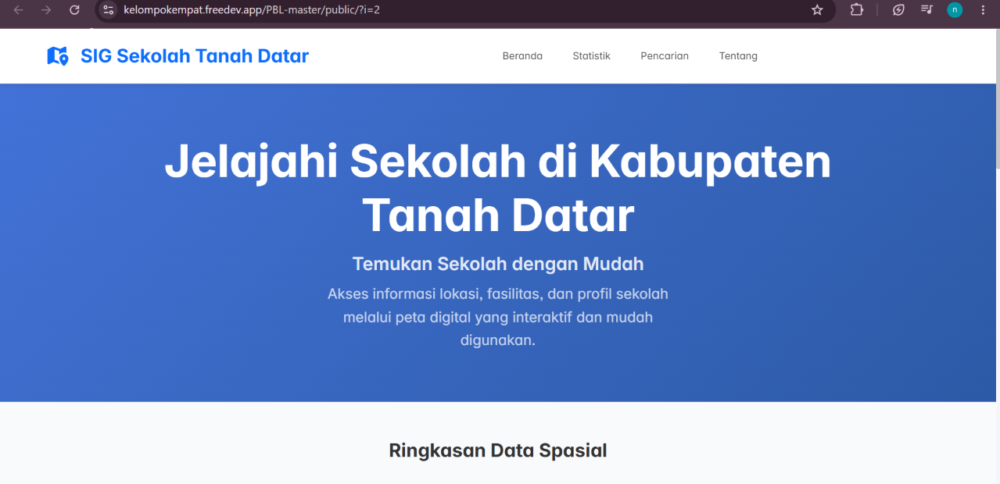
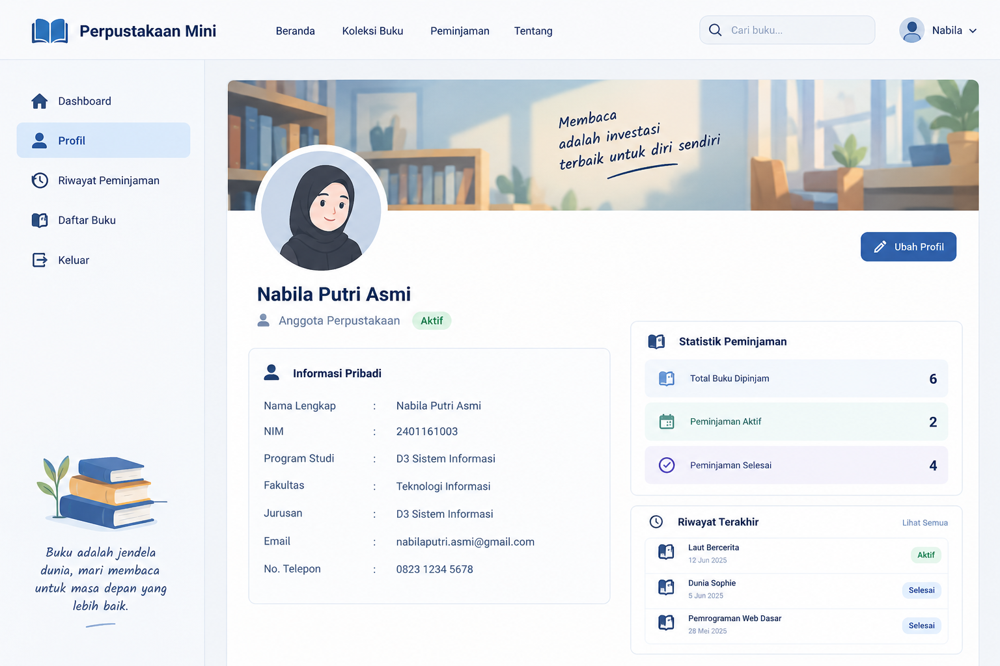
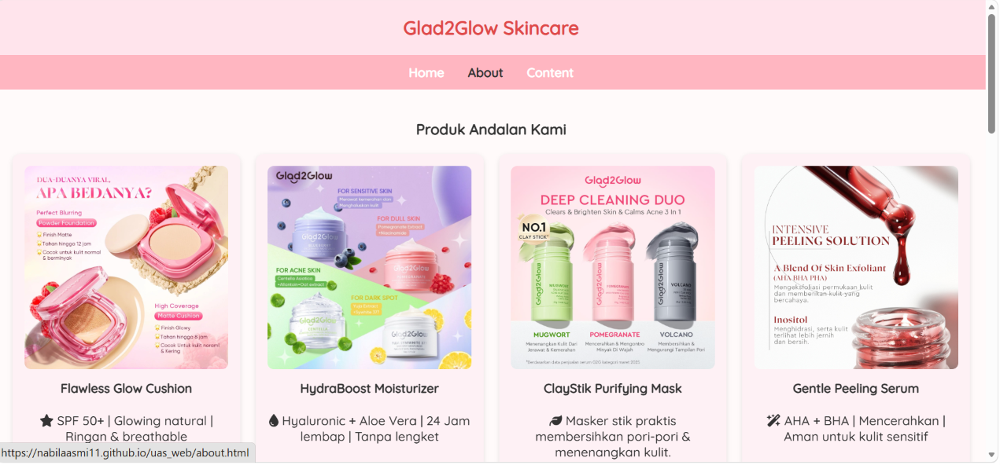

Proyek Saya
Karya yang telah saya kerjakan
👥 Proyek Kelompok

GIS WebGIS Sekolah Kab. Tanah Datar
Sistem Informasi Geografis untuk pemetaan dan pencarian data sekolah di wilayah Kabupaten Tanah Datar berbasis web.
Kunjungi Proyek
Web AppPerpustakaan Mini
Aplikasi manajemen perpustakaan sederhana untuk pencatatan buku, peminjaman, dan pengembalian secara digital.
Kunjungi Proyek👤 Tugas Individu
 API Integration
API Integration
OMDB Movie Search
Aplikasi pencarian film menggunakan integrasi API dari OMDB (Open Movie Database) untuk menampilkan detail film secara real-time.
Kunjungi Proyek
UAS WebGlad2Glow Skincare
Website brand skincare lokal yang menampilkan rangkaian produk perawatan kulit berkualitas tinggi dengan desain modern, informatif, dan responsif.
Kunjungi Proyek